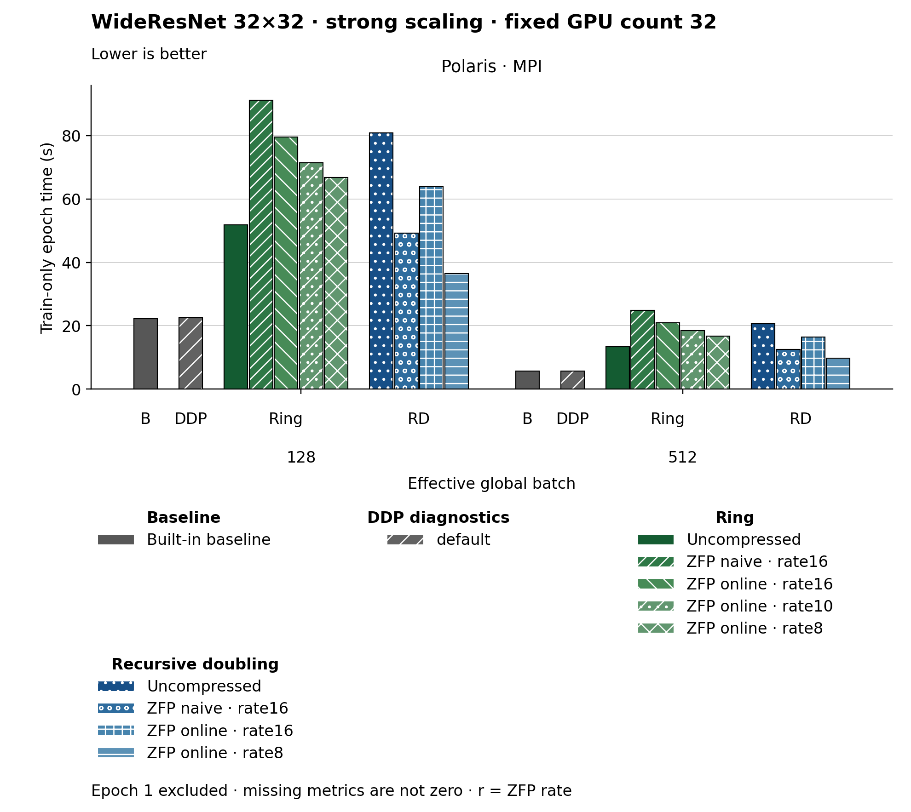

The figure uses bars. Families and methods are identified by text and patterns in addition to color. The metric is Train-only epoch time (s). Polaris · MPI, Effective global batch 128: Built-in baseline has the lowest plotted value, 22.250. Polaris · MPI, Effective global batch 512: Built-in baseline has the lowest plotted value, 5.660. Epoch 1 is excluded. Values are medians; when repeated runs are available the selected repeat policy is median. These are not confidence intervals across repeated jobs. Missing or unrecorded metrics are omitted, not set to zero.
| Panel | Effective global batch | Method | Value | Runs |
|---|---|---|---|---|
| Polaris · MPI | 128 | none | 22.25 | 1 |
| Polaris · MPI | 128 | default | 22.54 | 1 |
| Polaris · MPI | 128 | ring | 51.81 | 1 |
| Polaris · MPI | 128 | ring_zfp_naive:16 | 91.16 | 1 |
| Polaris · MPI | 128 | ring_zfp_online_coll:16 | 79.48 | 1 |
| Polaris · MPI | 128 | ring_zfp_online_coll:10 | 71.43 | 1 |
| Polaris · MPI | 128 | recursive_doubling | 80.82 | 1 |
| Polaris · MPI | 128 | recursive_doubling_zfp_naive:16 | 49.17 | 1 |
| Polaris · MPI | 128 | recursive_doubling_zfp_online_coll:16 | 63.91 | 1 |
| Polaris · MPI | 128 | recursive_doubling_zfp_online_coll:8 | 36.44 | 1 |
| Polaris · MPI | 512 | none | 5.66 | 1 |
| Polaris · MPI | 512 | default | 5.74 | 1 |
| Polaris · MPI | 512 | ring | 13.34 | 1 |
| Polaris · MPI | 512 | ring_zfp_naive:16 | 24.86 | 1 |
| Polaris · MPI | 512 | ring_zfp_online_coll:16 | 20.88 | 1 |
| Polaris · MPI | 512 | ring_zfp_online_coll:10 | 18.54 | 1 |
| Polaris · MPI | 512 | recursive_doubling | 20.68 | 1 |
| Polaris · MPI | 512 | recursive_doubling_zfp_naive:16 | 12.51 | 1 |
| Polaris · MPI | 512 | recursive_doubling_zfp_online_coll:16 | 16.51 | 1 |
| Polaris · MPI | 512 | recursive_doubling_zfp_online_coll:8 | 9.8 | 1 |
| Polaris · MPI | 128 | ring_zfp_online_coll:8 | 66.7 | 1 |
| Polaris · MPI | 512 | ring_zfp_online_coll:8 | 16.76 | 1 |